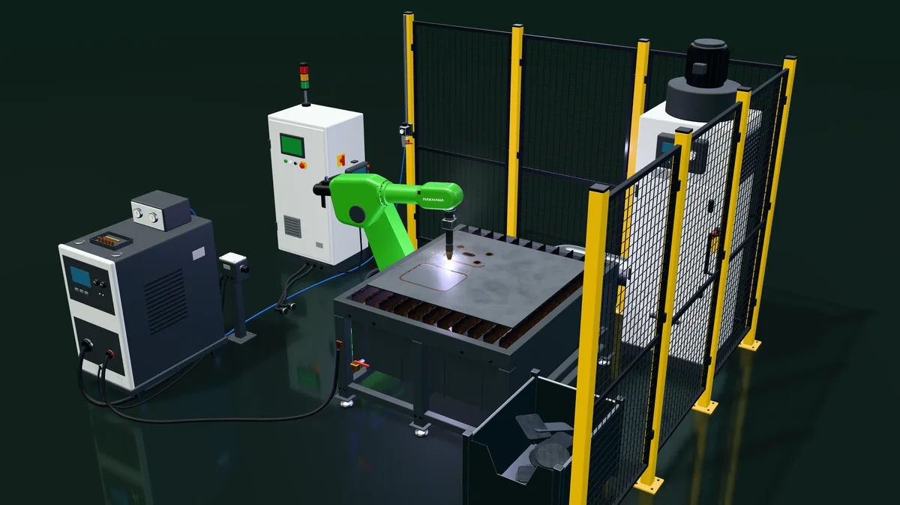

القطع بالليزر والبلازماالقطع بالليزر على خط خزانات محوّلات نفّذناه
القطع، من الصفيحة إلى القطعة.
ماكينات ليزر ليفي وبلازما CNC من مجموعة ماكيناتنا، وروبوتات سلسلة MR للقطع ثلاثي الأبعاد، تعمل مستقلةً أو ضمن خط إنتاج.
ما الذي يتغيّر
العمل نفسه، قبل الخلية وبعدها.
اليوم
- أجزاء تُرسم عليها خطوط القطع وتُقطع يدويًا، أو تُرسل إلى مقاول باطن.
- تحتاج الحواف إلى جلخ قبل اللحام.
- تُقطع الفتحات في الأجزاء المشكّلة أو الملحومة في النهاية يدويًا.
مع خلية آلية
- قطع مُرتّبة على اللوح تُقطع مباشرة من رسوماتك.
- حواف الليزر لا تحتاج عادةً إلى جلخ؛ أما حواف البلازما فتُفحص وفق إجراء اللحام لديك.
- يقطع الروبوت الفتحات والحواف المشطوفة في القطع ثلاثية الأبعاد ضمن الخط نفسه.
ما يشمله الحل
تشتري الخلية كاملة، مع المعدات الملحقة بالروبوت.
بحسب قطعتك، تكون الخلية قياسية، أو قياسية بتعديل بسيط، أو خاصة.
- 01روبوت أو ماكينة قطع CNC
- 02مصدر ليزر أو بلازما
- 03طاولة قطع مع شفط
- 04كاميرا رؤية عند تفاوت القطع
- 05حجرة آمنة لليزر أو حواجز حماية، مع أقفال أمان
- 06نظام التحكّم وشاشة المشغّل
- 07التدريب والخدمة
6
كجم، MR6-1400: الحمولة الاسمية شاملةً المشعل
ضمن الخط
القطع بالليزر على خط خزانات محوّلات نفّذناه
المصادر: مجموعة ماكينات مكننة؛ النشرة الفنية لسلسلة MR (أكتوبر 2026)؛ خط خزانات المحوّلات.
داخل الخلية
تعرّف على ما بداخل الخلية، والمس أي نقطة لتعرف كل جزء.
خلية تفاعلية ثلاثية الأبعاد. حرّك المؤشر أو إصبعك فوقها لتوجيه الذراع.

القطع بالبلازما
رسم توضيحي تفاعلي ثلاثي الأبعاد؛ النِّسب وزمن الدورة تقريبية.
متى تناسب الخلية قطعتك
ثلاثة أسئلة تحسم معظم الحالات.
إذا انطبقت عليك هذه النقاط، فأحضر لنا قطعتك. نبدأ بتجربة إن توفّرت خلية مناسبة، أو بدراسة.
يناسبك هذا الحل عندما
- تشتري القطع اليوم جاهزة القطع أو تقطعها يدويًا
- تنتقل قطعك بعد ذلك إلى الثني واللحام
- تحتاج إلى فتحات أو حواف مشطوفة في أجزاء مشكّلة أو ملحومة
في مصانع حقيقية
لقطات من مشاريعنا.
أسئلة شائعة
أكثر ما يسأل عنه مديرو المصانع.
ليزر أم بلازما؟
الليزر للدقة والحواف النظيفة في الصفائح والألواح المتوسطة، والبلازما للألواح الأسمك بتكلفة أقل. نقدّم توصيتنا بعد الاطلاع على قطعك وكمياتك.
تقدير الوفورات
افتح التقديراطّلع على وفر تقديري لخلايا كهذه.
حدّد عدد الخلايا والورديات. النتيجة نطاق تقديري وليست عرضًا.